整趟四张图
逐弯核对
T1 · 前刃搓雪
09:52:50.25 – 09:52:55.54（5.3 秒）
离心力 0.71 g施压时机 12% 在滚落线前Peak 点 晚 （滚落线后 45%）
左脚（前脚）Peak 晚 · 施压时机 18% ｜ 右脚（后脚）Peak 晚 · 施压时机 13%
T2 · 后刃走刃
09:52:55.54 – 09:52:57.18（1.6 秒）
离心力 1.85 g施压时机 35% 在滚落线前Peak 点 晚 （滚落线后 20%）
左脚（前脚）Peak 晚 · 施压时机 33% ｜ 右脚（后脚）Peak 晚 · 施压时机 37%
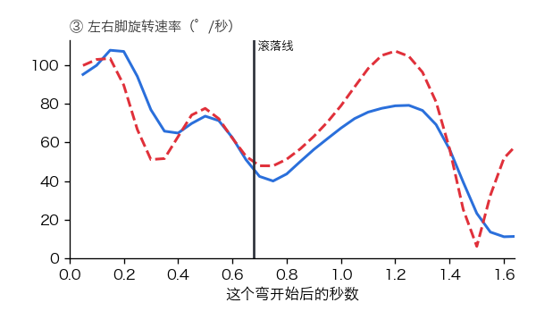
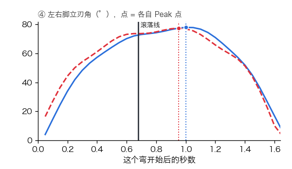
T3 · 前刃走刃
09:52:57.18 – 09:52:59.06（1.9 秒）
离心力 1.96 g施压时机 37% 在滚落线前Peak 点 晚 （滚落线后 17%）
左脚（前脚）Peak 晚 · 施压时机 37% ｜ 右脚（后脚）Peak 准 · 施压时机 37%
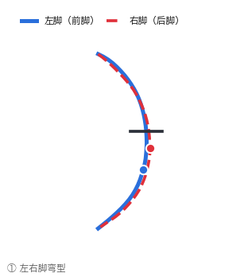
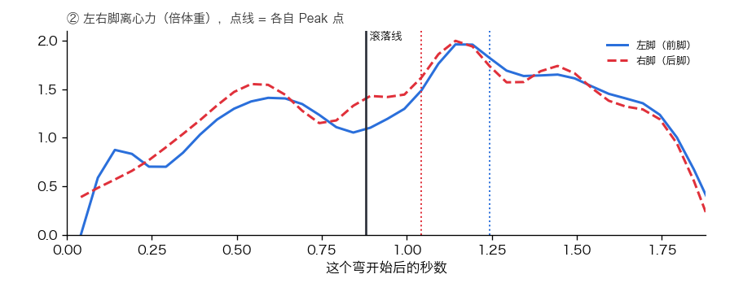
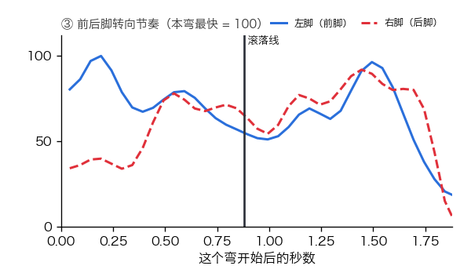
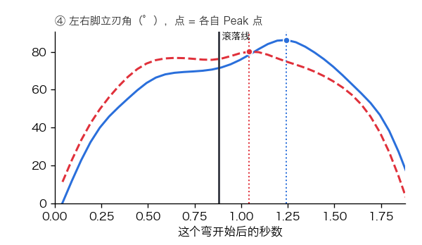
T4 · 后刃搓雪
09:52:59.06 – 09:53:00.97（1.9 秒）
离心力 2.40 g施压时机 51% 在滚落线前Peak 点 早 （滚落线前 10%）
左脚（前脚）Peak 准 · 施压时机 50% ｜ 右脚（后脚）Peak 早 · 施压时机 52%
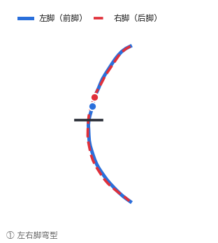
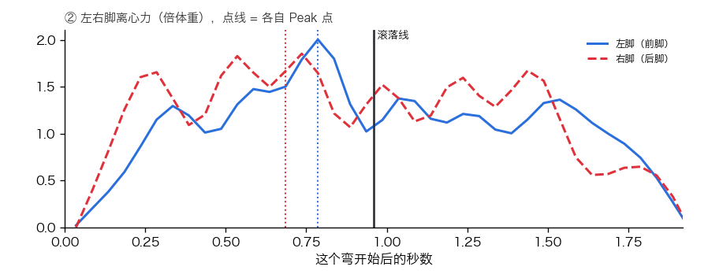
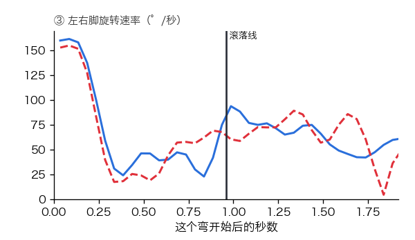
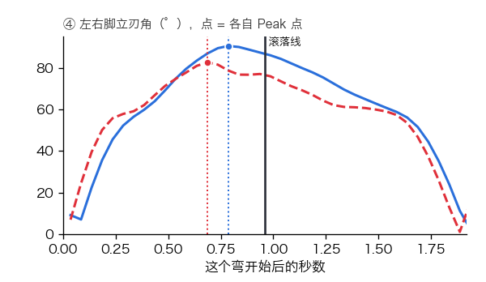
T5 · 前刃走刃
09:53:00.97 – 09:53:02.50（1.5 秒）
离心力 2.13 g施压时机 42% 在滚落线前Peak 点 准 （滚落线前后 10% 内）
左脚（前脚）Peak 准 · 施压时机 43% ｜ 右脚（后脚）Peak 准 · 施压时机 45%
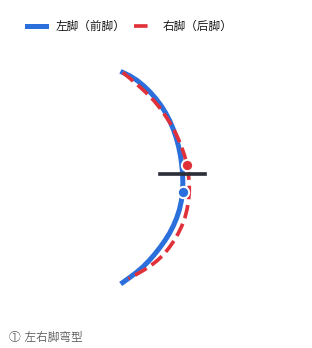
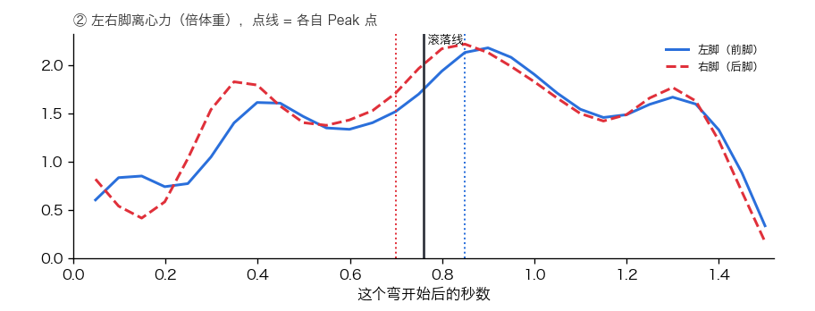
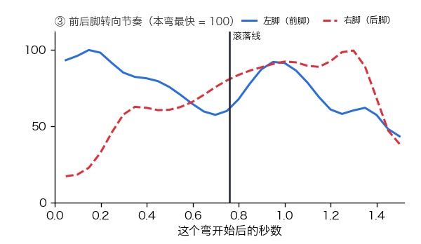
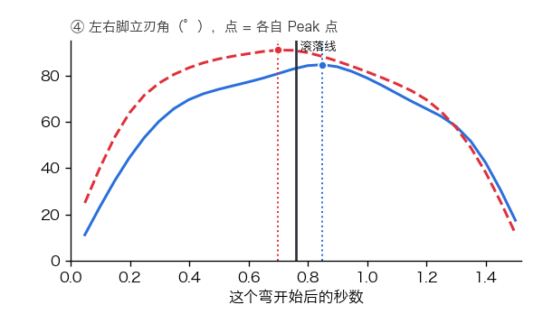
T6 · 后刃走刃
09:53:02.50 – 09:53:04.57（2.1 秒）
离心力 1.87 g施压时机 49% 在滚落线前Peak 点 晚 （滚落线后 12%）
左脚（前脚）Peak 准 · 施压时机 49% ｜ 右脚（后脚）Peak 准 · 施压时机 47%
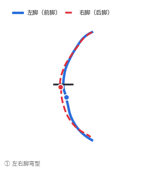
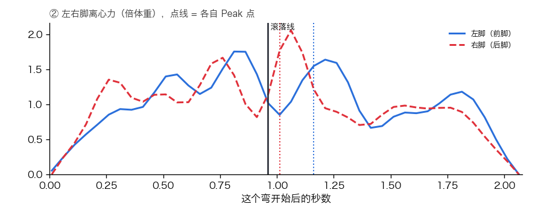
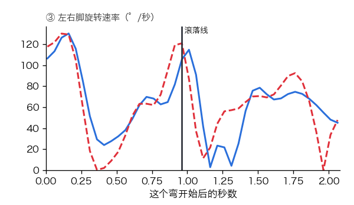
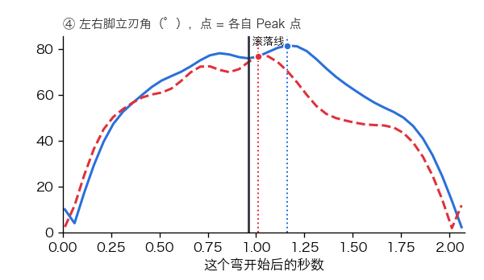
T7 · 前刃走刃
09:53:04.57 – 09:53:06.46（1.9 秒）
离心力 1.72 g施压时机 39% 在滚落线前Peak 点 准 （滚落线前后 10% 内）
左脚（前脚）Peak 准 · 施压时机 42% ｜ 右脚（后脚）Peak 准 · 施压时机 41%
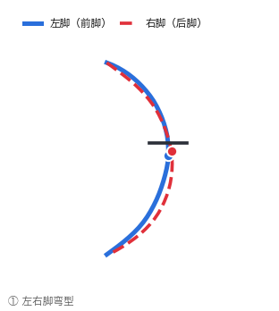
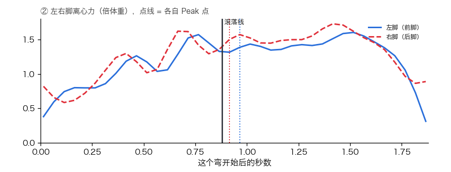
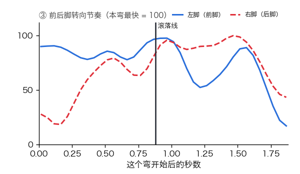
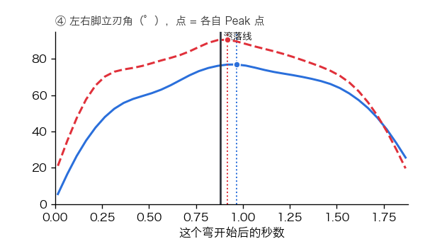
T8 · 后刃走刃
09:53:06.46 – 09:53:08.46（2.0 秒）
离心力 1.65 g施压时机 47% 在滚落线前Peak 点 准 （滚落线前后 10% 内）
左脚（前脚）Peak 准 · 施压时机 49% ｜ 右脚（后脚）Peak 准 · 施压时机 52%
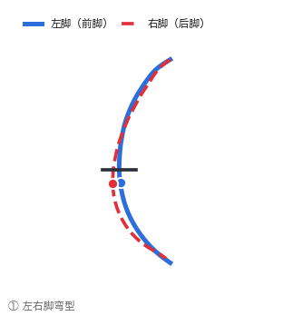
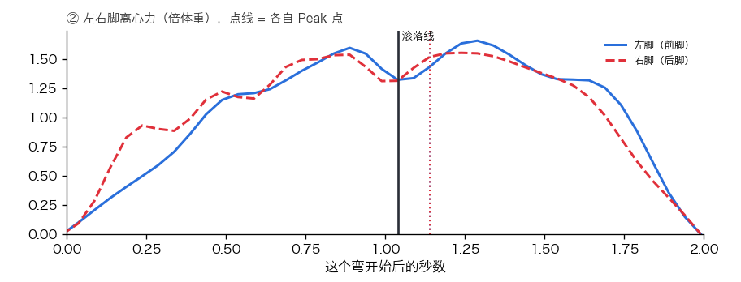
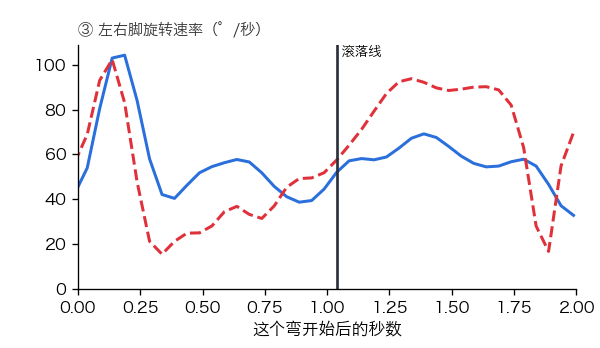
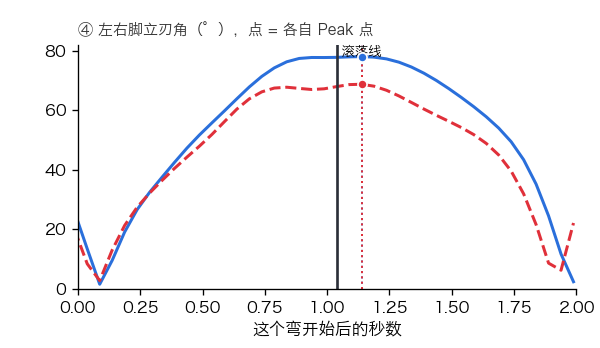
T9 · 前刃走刃
09:53:08.46 – 09:53:09.93（1.5 秒）
离心力 1.76 g施压时机 41% 在滚落线前Peak 点 晚 （滚落线后 14%）
左脚（前脚）Peak 晚 · 施压时机 44% ｜ 右脚（后脚）Peak 准 · 施压时机 43%
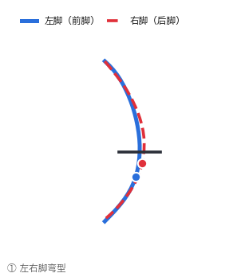
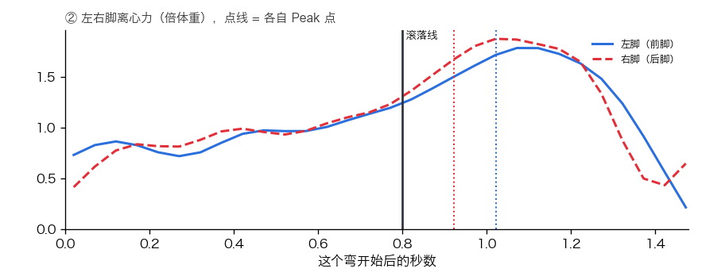
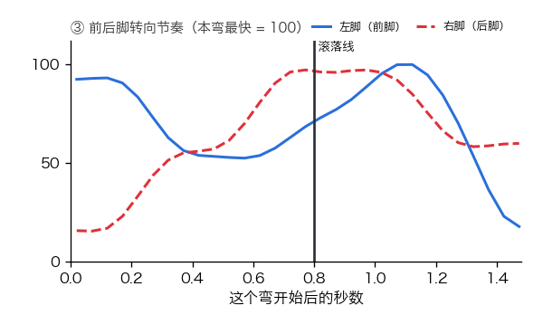
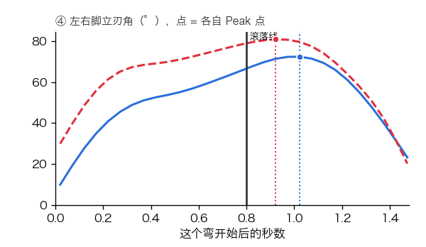
T10 · 后刃搓雪
09:53:09.93 – 09:53:12.57（2.6 秒）
离心力 0.84 g施压时机 21% 在滚落线前Peak 点 准 （滚落线前后 10% 内）
左脚（前脚）Peak 准 · 施压时机 21% ｜ 右脚（后脚）Peak 准 · 施压时机 23%
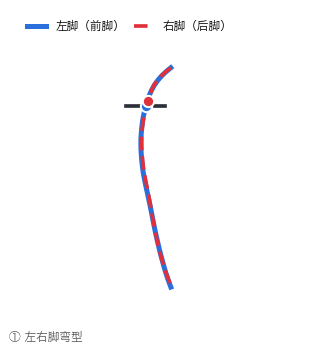
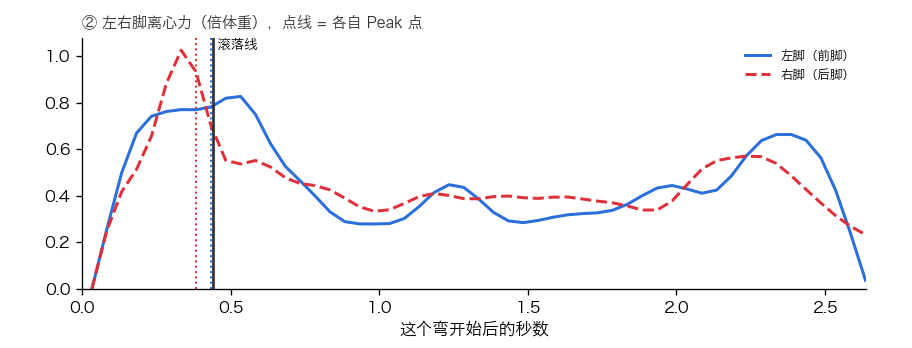
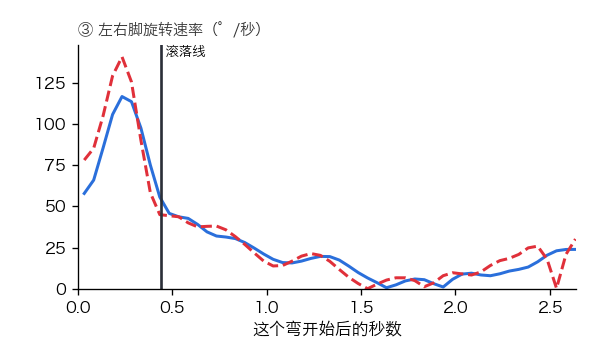
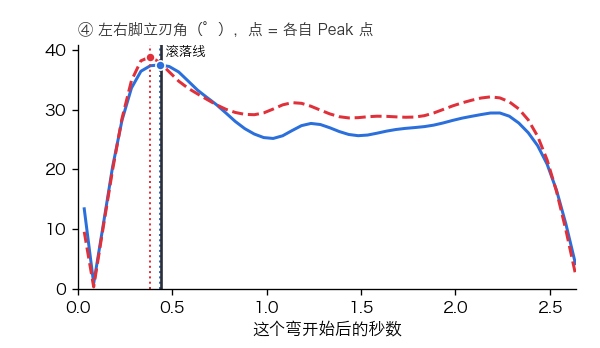
T11 · 前刃搓雪
09:53:12.57 – 09:53:13.78（1.2 秒）
离心力 0.87 g施压时机 33% 在滚落线前Peak 点 晚 （滚落线后 20%）
左脚（前脚）Peak 晚 · 施压时机 38% ｜ 右脚（后脚）Peak 晚 · 施压时机 31%
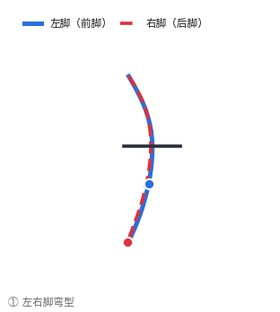
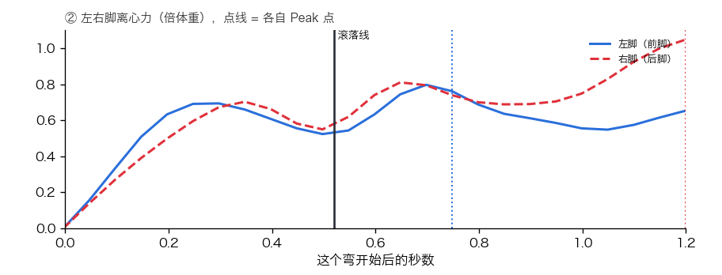
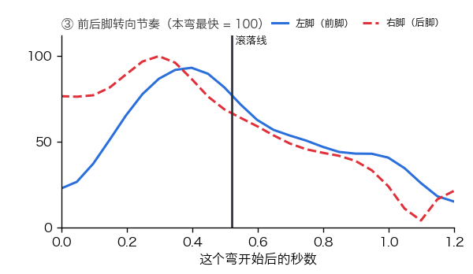
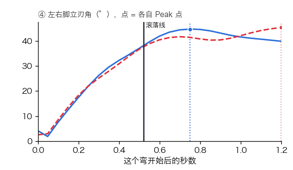
T12 · 后刃搓雪
09:53:13.78 – 09:53:16.50（2.7 秒）
离心力 0.70 g施压时机 14% 在滚落线前Peak 点 早 （滚落线前 31%）
左脚（前脚）Peak 早 · 施压时机 13% ｜ 右脚（后脚）Peak 早 · 施压时机 11%
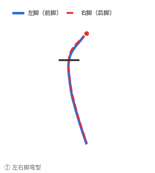
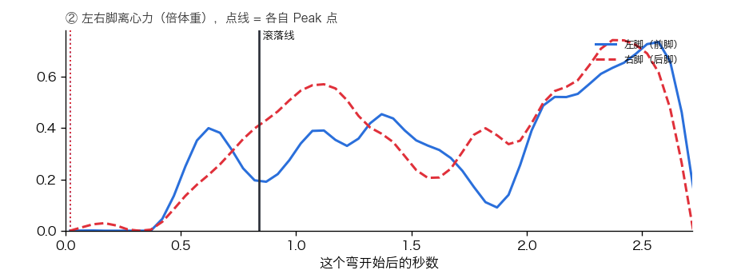
T13 · 前刃搓雪
09:53:16.50 – 09:53:18.57（2.1 秒）
离心力 0.71 g施压时机 32% 在滚落线前Peak 点 准 （滚落线前后 10% 内）
左脚（前脚）Peak 准 · 施压时机 34% ｜ 右脚（后脚）Peak 晚 · 施压时机 31%
T14 · 后刃搓雪
09:53:18.57 – 09:53:20.65（2.1 秒）
离心力 0.64 g施压时机 21% 在滚落线前Peak 点 早 （滚落线前 40%）
左脚（前脚）Peak 早 · 施压时机 23% ｜ 右脚（后脚）Peak 早 · 施压时机 16%
T15 · 后刃搓雪
09:53:20.65 – 09:53:26.69（6.0 秒）
离心力 0.40 g施压时机 39% 在滚落线前Peak 点 准 （滚落线前后 10% 内）
左脚（前脚）Peak 准 · 施压时机 17% ｜ 右脚（后脚）Peak 准 · 施压时机 39%
整趟四张图
逐弯核对
T1 · 前刃走刃
10:01:04.96 – 10:01:05.68（0.7 秒）
离心力 0.90 g施压时机 47% 在滚落线前Peak 点 早 （滚落线前 11%）
左脚（前脚）Peak 准 · 施压时机 50% ｜ 右脚（后脚）Peak 早 · 施压时机 52%
T2 · 后刃走刃
10:01:05.68 – 10:01:07.17（1.5 秒）
离心力 1.80 g施压时机 49% 在滚落线前Peak 点 准 （滚落线前后 10% 内）
左脚（前脚）Peak 准 · 施压时机 48% ｜ 右脚（后脚）Peak 准 · 施压时机 52%
T3 · 前刃走刃
10:01:07.17 – 10:01:08.76（1.6 秒）
离心力 2.20 g施压时机 47% 在滚落线前Peak 点 准 （滚落线前后 10% 内）
左脚（前脚）Peak 准 · 施压时机 46% ｜ 右脚（后脚）Peak 准 · 施压时机 48%
T4 · 后刃搓雪
10:01:08.76 – 10:01:10.81（2.0 秒）
离心力 2.00 g施压时机 48% 在滚落线前Peak 点 早 （滚落线前 16%）
左脚（前脚）Peak 早 · 施压时机 47% ｜ 右脚（后脚）Peak 早 · 施压时机 50%
T5 · 前刃走刃
10:01:10.81 – 10:01:12.57（1.8 秒）
离心力 1.95 g施压时机 49% 在滚落线前Peak 点 早 （滚落线前 18%）
左脚（前脚）Peak 准 · 施压时机 51% ｜ 右脚（后脚）Peak 早 · 施压时机 52%
T6 · 后刃走刃
10:01:12.57 – 10:01:14.36（1.8 秒）
离心力 1.91 g施压时机 58% 在滚落线前Peak 点 早 （滚落线前 13%）
左脚（前脚）Peak 早 · 施压时机 62% ｜ 右脚（后脚）Peak 早 · 施压时机 65%
T7 · 前刃走刃
10:01:14.36 – 10:01:15.96（1.6 秒）
离心力 2.04 g施压时机 52% 在滚落线前Peak 点 准 （滚落线前后 10% 内）
左脚（前脚）Peak 准 · 施压时机 53% ｜ 右脚（后脚）Peak 准 · 施压时机 56%
T8 · 后刃走刃
10:01:15.96 – 10:01:17.72（1.8 秒）
离心力 1.86 g施压时机 62% 在滚落线前Peak 点 早 （滚落线前 18%）
左脚（前脚）Peak 早 · 施压时机 60% ｜ 右脚（后脚）Peak 早 · 施压时机 62%
T9 · 前刃走刃
10:01:17.72 – 10:01:19.00（1.3 秒）
离心力 2.09 g施压时机 39% 在滚落线前Peak 点 准 （滚落线前后 10% 内）
左脚（前脚）Peak 晚 · 施压时机 37% ｜ 右脚（后脚）Peak 准 · 施压时机 39%
T10 · 后刃走刃
10:01:19.00 – 10:01:19.93（0.9 秒）
离心力 1.51 g施压时机 59% 在滚落线前Peak 点 准 （滚落线前后 10% 内）
左脚（前脚）Peak 准 · 施压时机 53% ｜ 右脚（后脚）Peak 准 · 施压时机 59%
T11 · 前刃走刃
10:01:19.93 – 10:01:20.76（0.8 秒）
离心力 1.64 g施压时机 32% 在滚落线前Peak 点 准 （滚落线前后 10% 内）
左脚（前脚）Peak 晚 · 施压时机 34% ｜ 右脚（后脚）Peak 准 · 施压时机 37%
T12 · 后刃走刃
10:01:20.76 – 10:01:21.64（0.9 秒）
离心力 1.38 g施压时机 55% 在滚落线前Peak 点 准 （滚落线前后 10% 内）
左脚（前脚）Peak 准 · 施压时机 49% ｜ 右脚（后脚）Peak 准 · 施压时机 58%
T13 · 前刃走刃
10:01:21.64 – 10:01:22.61（1.0 秒）
离心力 1.77 g施压时机 34% 在滚落线前Peak 点 准 （滚落线前后 10% 内）
左脚（前脚）Peak 晚 · 施压时机 34% ｜ 右脚（后脚）Peak 准 · 施压时机 34%
T14 · 后刃走刃
10:01:22.61 – 10:01:23.44（0.8 秒）
离心力 1.72 g施压时机 59% 在滚落线前Peak 点 准 （滚落线前后 10% 内）
左脚（前脚）Peak 准 · 施压时机 54% ｜ 右脚（后脚）Peak 准 · 施压时机 62%
T15 · 前刃走刃
10:01:23.44 – 10:01:24.32（0.9 秒）
离心力 1.73 g施压时机 29% 在滚落线前Peak 点 准 （滚落线前后 10% 内）
左脚（前脚）Peak 晚 · 施压时机 31% ｜ 右脚（后脚）Peak 准 · 施压时机 29%
T16 · 后刃走刃
10:01:24.32 – 10:01:25.32（1.0 秒）
离心力 1.59 g施压时机 58% 在滚落线前Peak 点 准 （滚落线前后 10% 内）
左脚（前脚）Peak 准 · 施压时机 62% ｜ 右脚（后脚）Peak 准 · 施压时机 67%
T17 · 前刃走刃
10:01:25.32 – 10:01:26.32（1.0 秒）
离心力 1.83 g施压时机 30% 在滚落线前Peak 点 准 （滚落线前后 10% 内）
左脚（前脚）Peak 晚 · 施压时机 32% ｜ 右脚（后脚）Peak 准 · 施压时机 34%
T18 · 后刃搓雪
10:01:26.32 – 10:01:27.96（1.6 秒）
离心力 0.88 g施压时机 35% 在滚落线前Peak 点 晚 （滚落线后 22%）
左脚（前脚）Peak 晚 · 施压时机 38% ｜ 右脚（后脚）Peak 晚 · 施压时机 39%
T19 · 前刃搓雪
10:01:27.96 – 10:01:31.93（4.0 秒）
离心力 0.52 g施压时机 47% 在滚落线前Peak 点 晚 （滚落线后 43%）
左脚（前脚）Peak 准 · 施压时机 48% ｜ 右脚（后脚）Peak 晚 · 施压时机 47%
T20 · 后刃搓雪
10:01:31.93 – 10:01:33.40（1.5 秒）
离心力 0.80 g施压时机 25% 在滚落线前Peak 点 晚 （滚落线后 24%）
左脚（前脚）Peak 晚 · 施压时机 36% ｜ 右脚（后脚）Peak 晚 · 施压时机 25%
T21 · 后刃搓雪
10:01:33.40 – 10:01:36.49（3.1 秒）
离心力 0.27 g施压时机 29% 在滚落线前Peak 点 晚 （滚落线后 47%）
左脚（前脚）Peak 晚 · 施压时机 20% ｜ 右脚（后脚）Peak 晚 · 施压时机 32%
整趟四张图
逐弯核对
T1 · 前刃搓雪
10:05:49.32 – 10:05:56.53（7.2 秒）
离心力 0.69 g施压时机 19% 在滚落线前Peak 点 晚 （滚落线后 53%）
左脚（前脚）Peak 晚 · 施压时机 23% ｜ 右脚（后脚）Peak 晚 · 施压时机 15%
T2 · 后刃走刃
10:05:56.53 – 10:05:58.21（1.7 秒）
离心力 1.84 g施压时机 55% 在滚落线前Peak 点 早 （滚落线前 12%）
左脚（前脚）Peak 准 · 施压时机 53% ｜ 右脚（后脚）Peak 早 · 施压时机 55%
T3 · 前刃走刃
10:05:58.21 – 10:05:59.68（1.5 秒）
离心力 2.23 g施压时机 44% 在滚落线前Peak 点 早 （滚落线前 14%）
左脚（前脚）Peak 准 · 施压时机 43% ｜ 右脚（后脚）Peak 早 · 施压时机 43%
T4 · 后刃搓雪
10:05:59.68 – 10:06:01.85（2.2 秒）
离心力 2.06 g施压时机 52% 在滚落线前Peak 点 准 （滚落线前后 10% 内）
左脚（前脚）Peak 准 · 施压时机 51% ｜ 右脚（后脚）Peak 准 · 施压时机 57%
T5 · 前刃走刃
10:06:01.85 – 10:06:03.49（1.6 秒）
离心力 1.97 g施压时机 52% 在滚落线前Peak 点 早 （滚落线前 20%）
左脚（前脚）Peak 早 · 施压时机 52% ｜ 右脚（后脚）Peak 早 · 施压时机 52%
T6 · 后刃走刃
10:06:03.49 – 10:06:05.29（1.8 秒）
离心力 1.96 g施压时机 64% 在滚落线前Peak 点 早 （滚落线前 20%）
左脚（前脚）Peak 早 · 施压时机 64% ｜ 右脚（后脚）Peak 早 · 施压时机 64%
T7 · 前刃走刃
10:06:05.29 – 10:06:06.93（1.6 秒）
离心力 2.10 g施压时机 48% 在滚落线前Peak 点 早 （滚落线前 15%）
左脚（前脚）Peak 早 · 施压时机 50% ｜ 右脚（后脚）Peak 早 · 施压时机 51%
T8 · 后刃走刃
10:06:06.93 – 10:06:08.72（1.8 秒）
离心力 1.72 g施压时机 65% 在滚落线前Peak 点 准 （滚落线前后 10% 内）
左脚（前脚）Peak 准 · 施压时机 61% ｜ 右脚（后脚）Peak 准 · 施压时机 66%
T9 · 前刃走刃
10:06:08.72 – 10:06:10.12（1.4 秒）
离心力 1.45 g施压时机 41% 在滚落线前Peak 点 准 （滚落线前后 10% 内）
左脚（前脚）Peak 晚 · 施压时机 41% ｜ 右脚（后脚）Peak 晚 · 施压时机 41%
T10 · 后刃搓雪
10:06:10.12 – 10:06:11.29（1.2 秒）
离心力 1.04 g施压时机 50% 在滚落线前Peak 点 准 （滚落线前后 10% 内）
左脚（前脚）Peak 准 · 施压时机 44% ｜ 右脚（后脚）Peak 准 · 施压时机 47%
T11 · 前刃走刃
10:06:11.29 – 10:06:12.36（1.1 秒）
离心力 1.41 g施压时机 40% 在滚落线前Peak 点 准 （滚落线前后 10% 内）
左脚（前脚）Peak 晚 · 施压时机 37% ｜ 右脚（后脚）Peak 准 · 施压时机 37%
T12 · 后刃搓雪
10:06:12.36 – 10:06:13.36（1.0 秒）
离心力 1.22 g施压时机 53% 在滚落线前Peak 点 准 （滚落线前后 10% 内）
左脚（前脚）Peak 晚 · 施压时机 44% ｜ 右脚（后脚）Peak 准 · 施压时机 55%
T13 · 前刃走刃
10:06:13.36 – 10:06:14.49（1.1 秒）
离心力 1.28 g施压时机 36% 在滚落线前Peak 点 准 （滚落线前后 10% 内）
左脚（前脚）Peak 晚 · 施压时机 32% ｜ 右脚（后脚）Peak 晚 · 施压时机 33%
T14 · 后刃搓雪
10:06:14.49 – 10:06:15.57（1.1 秒）
离心力 1.11 g施压时机 62% 在滚落线前Peak 点 准 （滚落线前后 10% 内）
左脚（前脚）Peak 准 · 施压时机 58% ｜ 右脚（后脚）Peak 准 · 施压时机 63%
T15 · 前刃走刃
10:06:15.57 – 10:06:16.89（1.3 秒）
离心力 1.03 g施压时机 39% 在滚落线前Peak 点 晚 （滚落线后 15%）
左脚（前脚）Peak 晚 · 施压时机 39% ｜ 右脚（后脚）Peak 晚 · 施压时机 40%
T16 · 后刃搓雪
10:06:16.89 – 10:06:18.57（1.7 秒）
离心力 0.88 g施压时机 60% 在滚落线前Peak 点 准 （滚落线前后 10% 内）
左脚（前脚）Peak 准 · 施压时机 59% ｜ 右脚（后脚）Peak 准 · 施压时机 60%
T17 · 前刃搓雪
10:06:18.57 – 10:06:22.36（3.8 秒）
离心力 0.66 g施压时机 44% 在滚落线前Peak 点 晚 （滚落线后 39%）
左脚（前脚）Peak 晚 · 施压时机 44% ｜ 右脚（后脚）Peak 晚 · 施压时机 42%
T18 · 后刃搓雪
10:06:22.36 – 10:06:23.64（1.3 秒）
离心力 0.77 g施压时机 39% 在滚落线前Peak 点 晚 （滚落线后 12%）
左脚（前脚）Peak 晚 · 施压时机 53% ｜ 右脚（后脚）Peak 晚 · 施压时机 33%
T19 · 后刃搓雪
10:06:23.64 – 10:06:26.49（2.8 秒）
离心力 0.30 g施压时机 70% 在滚落线前Peak 点 早 （滚落线前 21%）
左脚（前脚）Peak 早 · 施压时机 58% ｜ 右脚（后脚）Peak 早 · 施压时机 12%
整趟四张图
逐弯核对
T1 · 前刃走刃
10:10:46.69 – 10:10:47.69（1.0 秒）
离心力 1.40 g施压时机 44% 在滚落线前Peak 点 准 （滚落线前后 10% 内）
左脚（前脚）Peak 准 · 施压时机 46% ｜ 右脚（后脚）Peak 准 · 施压时机 47%
T2 · 后刃走刃
10:10:47.69 – 10:10:49.50（1.8 秒）
离心力 1.88 g施压时机 38% 在滚落线前Peak 点 晚 （滚落线后 18%）
左脚（前脚）Peak 晚 · 施压时机 38% ｜ 右脚（后脚）Peak 晚 · 施压时机 39%
T3 · 前刃走刃
10:10:49.50 – 10:10:50.97（1.5 秒）
离心力 2.17 g施压时机 45% 在滚落线前Peak 点 准 （滚落线前后 10% 内）
左脚（前脚）Peak 准 · 施压时机 46% ｜ 右脚（后脚）Peak 早 · 施压时机 46%
T4 · 后刃搓雪
10:10:50.97 – 10:10:54.38（3.4 秒）
离心力 1.75 g施压时机 70% 在滚落线前Peak 点 早 （滚落线前 14%）
左脚（前脚）Peak 早 · 施压时机 74% ｜ 右脚（后脚）Peak 早 · 施压时机 67%
T5 · 后刃搓雪
10:10:54.38 – 10:10:57.86（3.5 秒）
离心力 0.76 g施压时机 55% 在滚落线前Peak 点 早 （滚落线前 23%）
左脚（前脚）Peak 早 · 施压时机 41% ｜ 右脚（后脚）Peak 早 · 施压时机 66%
T6 · 后刃走刃
10:10:57.86 – 10:10:59.50（1.6 秒）
离心力 0.95 g施压时机 33% 在滚落线前Peak 点 晚 （滚落线后 39%）
左脚（前脚）Peak 晚 · 施压时机 35% ｜ 右脚（后脚）Peak 晚 · 施压时机 36%
T7 · 前刃走刃
10:10:59.50 – 10:11:00.82（1.3 秒）
离心力 1.59 g施压时机 34% 在滚落线前Peak 点 晚 （滚落线后 21%）
左脚（前脚）Peak 晚 · 施压时机 34% ｜ 右脚（后脚）Peak 晚 · 施压时机 35%
T8 · 后刃搓雪
10:11:00.82 – 10:11:02.10（1.3 秒）
离心力 1.35 g施压时机 26% 在滚落线前Peak 点 晚 （滚落线后 12%）
左脚（前脚）Peak 晚 · 施压时机 31% ｜ 右脚（后脚）Peak 准 · 施压时机 33%
T9 · 前刃走刃
10:11:02.10 – 10:11:02.97（0.9 秒）
离心力 1.50 g施压时机 42% 在滚落线前Peak 点 准 （滚落线前后 10% 内）
左脚（前脚）Peak 准 · 施压时机 49% ｜ 右脚（后脚）Peak 准 · 施压时机 50%
T10 · 后刃走刃
10:11:02.97 – 10:11:04.01（1.0 秒）
离心力 1.43 g施压时机 33% 在滚落线前Peak 点 晚 （滚落线后 19%）
左脚（前脚）Peak 晚 · 施压时机 37% ｜ 右脚（后脚）Peak 晚 · 施压时机 43%
T11 · 前刃走刃
10:11:04.01 – 10:11:04.86（0.8 秒）
离心力 1.79 g施压时机 44% 在滚落线前Peak 点 准 （滚落线前后 10% 内）
左脚（前脚）Peak 准 · 施压时机 55% ｜ 右脚（后脚）Peak 准 · 施压时机 56%
T12 · 后刃搓雪
10:11:04.86 – 10:11:05.97（1.1 秒）
离心力 1.91 g施压时机 41% 在滚落线前Peak 点 准 （滚落线前后 10% 内）
左脚（前脚）Peak 准 · 施压时机 39% ｜ 右脚（后脚）Peak 准 · 施压时机 44%
T13 · 前刃搓雪
10:11:05.97 – 10:11:07.21（1.2 秒）
离心力 1.22 g施压时机 39% 在滚落线前Peak 点 准 （滚落线前后 10% 内）
左脚（前脚）Peak 准 · 施压时机 41% ｜ 右脚（后脚）Peak 准 · 施压时机 41%
T14 · 后刃搓雪
10:11:07.21 – 10:11:08.97（1.8 秒）
离心力 0.79 g施压时机 29% 在滚落线前Peak 点 晚 （滚落线后 48%）
左脚（前脚）Peak 晚 · 施压时机 32% ｜ 右脚（后脚）Peak 晚 · 施压时机 30%
T15 · 前刃搓雪
10:11:08.97 – 10:11:13.10（4.1 秒）
离心力 0.75 g施压时机 61% 在滚落线前Peak 点 晚 （滚落线后 28%）
左脚（前脚）Peak 晚 · 施压时机 60% ｜ 右脚（后脚）Peak 晚 · 施压时机 58%
T16 · 后刃搓雪
10:11:13.10 – 10:11:14.50（1.4 秒）
离心力 1.02 g施压时机 38% 在滚落线前Peak 点 准 （滚落线前后 10% 内）
左脚（前脚）Peak 准 · 施压时机 49% ｜ 右脚（后脚）Peak 准 · 施压时机 36%
T17 · 后刃搓雪
10:11:14.50 – 10:11:17.18（2.7 秒）
离心力 0.22 g施压时机 2% 在滚落线前Peak 点 早 （滚落线前 33%）
左脚（前脚）Peak 早 · 施压时机 2% ｜ 右脚（后脚）Peak 早 · 施压时机 1%
整趟四张图
逐弯核对
T1 · 后刃走刃
10:15:52.06 – 10:15:53.57（1.5 秒）
离心力 1.91 g施压时机 44% 在滚落线前Peak 点 准 （滚落线前后 10% 内）
左脚（前脚）Peak 准 · 施压时机 43% ｜ 右脚（后脚）Peak 准 · 施压时机 45%
T2 · 前刃走刃
10:15:53.57 – 10:15:55.14（1.6 秒）
离心力 2.49 g施压时机 45% 在滚落线前Peak 点 准 （滚落线前后 10% 内）
左脚（前脚）Peak 准 · 施压时机 46% ｜ 右脚（后脚）Peak 早 · 施压时机 44%
T3 · 后刃搓雪
10:15:55.14 – 10:15:57.21（2.1 秒）
离心力 1.95 g施压时机 36% 在滚落线前Peak 点 晚 （滚落线后 15%）
左脚（前脚）Peak 晚 · 施压时机 37% ｜ 右脚（后脚）Peak 准 · 施压时机 37%
T4 · 前刃走刃
10:15:57.21 – 10:15:58.93（1.7 秒）
离心力 2.25 g施压时机 39% 在滚落线前Peak 点 准 （滚落线前后 10% 内）
左脚（前脚）Peak 准 · 施压时机 41% ｜ 右脚（后脚）Peak 准 · 施压时机 41%
T5 · 后刃搓雪
10:15:58.93 – 10:16:01.06（2.1 秒）
离心力 1.80 g施压时机 33% 在滚落线前Peak 点 准 （滚落线前后 10% 内）
左脚（前脚）Peak 准 · 施压时机 36% ｜ 右脚（后脚）Peak 准 · 施压时机 37%
T6 · 前刃走刃
10:16:01.06 – 10:16:02.93（1.9 秒）
离心力 2.04 g施压时机 43% 在滚落线前Peak 点 准 （滚落线前后 10% 内）
左脚（前脚）Peak 准 · 施压时机 45% ｜ 右脚（后脚）Peak 准 · 施压时机 44%
T7 · 后刃走刃
10:16:02.93 – 10:16:04.89（2.0 秒）
离心力 1.84 g施压时机 40% 在滚落线前Peak 点 晚 （滚落线后 24%）
左脚（前脚）Peak 晚 · 施压时机 43% ｜ 右脚（后脚）Peak 晚 · 施压时机 45%
T8 · 前刃走刃
10:16:04.89 – 10:16:06.46（1.6 秒）
离心力 1.66 g施压时机 46% 在滚落线前Peak 点 准 （滚落线前后 10% 内）
左脚（前脚）Peak 准 · 施压时机 49% ｜ 右脚（后脚）Peak 早 · 施压时机 48%
T9 · 后刃搓雪
10:16:06.46 – 10:16:07.86（1.4 秒）
离心力 1.30 g施压时机 26% 在滚落线前Peak 点 晚 （滚落线后 26%）
左脚（前脚）Peak 晚 · 施压时机 26% ｜ 右脚（后脚）Peak 晚 · 施压时机 30%
T10 · 前刃走刃
10:16:07.86 – 10:16:08.82（1.0 秒）
离心力 1.17 g施压时机 43% 在滚落线前Peak 点 准 （滚落线前后 10% 内）
左脚（前脚）Peak 准 · 施压时机 47% ｜ 右脚（后脚）Peak 准 · 施压时机 43%
T11 · 后刃走刃
10:16:08.82 – 10:16:09.86（1.0 秒）
离心力 1.41 g施压时机 29% 在滚落线前Peak 点 晚 （滚落线后 19%）
左脚（前脚）Peak 晚 · 施压时机 30% ｜ 右脚（后脚）Peak 晚 · 施压时机 35%
T12 · 前刃走刃
10:16:09.86 – 10:16:10.78（0.9 秒）
离心力 1.56 g施压时机 36% 在滚落线前Peak 点 准 （滚落线前后 10% 内）
左脚（前脚）Peak 准 · 施压时机 41% ｜ 右脚（后脚）Peak 准 · 施压时机 41%
T13 · 后刃走刃
10:16:10.78 – 10:16:11.82（1.0 秒）
离心力 1.16 g施压时机 26% 在滚落线前Peak 点 晚 （滚落线后 15%）
左脚（前脚）Peak 晚 · 施压时机 26% ｜ 右脚（后脚）Peak 晚 · 施压时机 30%
T14 · 前刃走刃
10:16:11.82 – 10:16:12.86（1.0 秒）
离心力 1.29 g施压时机 39% 在滚落线前Peak 点 晚 （滚落线后 15%）
左脚（前脚）Peak 晚 · 施压时机 39% ｜ 右脚（后脚）Peak 准 · 施压时机 41%
T15 · 后刃走刃
10:16:12.86 – 10:16:14.29（1.4 秒）
离心力 0.86 g施压时机 27% 在滚落线前Peak 点 晚 （滚落线后 25%）
左脚（前脚）Peak 晚 · 施压时机 30% ｜ 右脚（后脚）Peak 晚 · 施压时机 33%
T16 · 前刃走刃
10:16:14.29 – 10:16:16.74（2.4 秒）
离心力 0.63 g施压时机 47% 在滚落线前Peak 点 准 （滚落线前后 10% 内）
左脚（前脚）Peak 准 · 施压时机 46% ｜ 右脚（后脚）Peak 准 · 施压时机 47%
T17 · 后刃搓雪
10:16:16.74 – 10:16:17.93（1.2 秒）
离心力 0.88 g施压时机 24% 在滚落线前Peak 点 晚 （滚落线后 20%）
左脚（前脚）Peak 晚 · 施压时机 29% ｜ 右脚（后脚）Peak 晚 · 施压时机 27%
T18 · 前刃搓雪
10:16:17.93 – 10:16:19.86（1.9 秒）
离心力 0.90 g施压时机 40% 在滚落线前Peak 点 晚 （滚落线后 40%）
左脚（前脚）Peak 晚 · 施压时机 40% ｜ 右脚（后脚）Peak 晚 · 施压时机 38%
T19 · 后刃搓雪
10:16:19.86 – 10:16:22.89（3.0 秒）
离心力 0.88 g施压时机 30% 在滚落线前Peak 点 准 （滚落线前后 10% 内）
左脚（前脚）Peak 准 · 施压时机 45% ｜ 右脚（后脚）Peak 准 · 施压时机 24%
整趟四张图
逐弯核对
T1 · 后刃搓雪
10:21:00.42 – 10:21:01.18（0.8 秒）
离心力 1.46 g施压时机 33% 在滚落线前Peak 点 晚 （滚落线后 11%）
左脚（前脚）Peak 晚 · 施压时机 37% ｜ 右脚（后脚）Peak 准 · 施压时机 42%
T2 · 前刃搓雪
10:21:01.18 – 10:21:02.06（0.9 秒）
离心力 1.93 g施压时机 26% 在滚落线前Peak 点 晚 （滚落线后 18%）
左脚（前脚）Peak 晚 · 施压时机 32% ｜ 右脚（后脚）Peak 晚 · 施压时机 26%
T3 · 后刃搓雪
10:21:02.06 – 10:21:04.29（2.2 秒）
离心力 2.10 g施压时机 57% 在滚落线前Peak 点 早 （滚落线前 14%）
左脚（前脚）Peak 早 · 施压时机 59% ｜ 右脚（后脚）Peak 晚 · 施压时机 51%
T4 · 后刃搓雪
10:21:04.29 – 10:21:05.38（1.1 秒）
离心力 1.66 g施压时机 58% 在滚落线前Peak 点 早 （滚落线前 22%）
左脚（前脚）Peak 早 · 施压时机 49% ｜ 右脚（后脚）Peak 早 · 施压时机 69%
T5 · 后刃搓雪
10:21:05.38 – 10:21:05.97（0.6 秒）
离心力 0.51 g施压时机 46% 在滚落线前Peak 点 早 （滚落线前 53%）
左脚（前脚）Peak 早 · 施压时机 14% ｜ 右脚（后脚）Peak 早 · 施压时机 43%
T6 · 前刃搓雪
10:21:05.97 – 10:21:08.29（2.3 秒）
离心力 0.83 g施压时机 17% 在滚落线前Peak 点 晚 （滚落线后 28%）
左脚（前脚）Peak 晚 · 施压时机 26% ｜ 右脚（后脚）Peak 晚 · 施压时机 15%
T7 · 后刃搓雪
10:21:08.29 – 10:21:09.57（1.3 秒）
离心力 1.44 g施压时机 33% 在滚落线前Peak 点 晚 （滚落线后 19%）
左脚（前脚）Peak 晚 · 施压时机 37% ｜ 右脚（后脚）Peak 晚 · 施压时机 33%
T8 · 前刃搓雪
10:21:09.57 – 10:21:10.57（1.0 秒）
离心力 1.61 g施压时机 23% 在滚落线前Peak 点 晚 （滚落线后 24%）
左脚（前脚）Peak 晚 · 施压时机 32% ｜ 右脚（后脚）Peak 晚 · 施压时机 26%
T9 · 后刃搓雪
10:21:10.57 – 10:21:11.61（1.0 秒）
离心力 1.42 g施压时机 23% 在滚落线前Peak 点 晚 （滚落线后 27%）
左脚（前脚）Peak 晚 · 施压时机 24% ｜ 右脚（后脚）Peak 晚 · 施压时机 23%
T10 · 前刃搓雪
10:21:11.61 – 10:21:12.57（1.0 秒）
离心力 1.56 g施压时机 29% 在滚落线前Peak 点 晚 （滚落线后 21%）
左脚（前脚）Peak 晚 · 施压时机 34% ｜ 右脚（后脚）Peak 晚 · 施压时机 32%
T11 · 后刃搓雪
10:21:12.57 – 10:21:13.54（1.0 秒）
离心力 1.68 g施压时机 22% 在滚落线前Peak 点 晚 （滚落线后 25%）
左脚（前脚）Peak 晚 · 施压时机 24% ｜ 右脚（后脚）Peak 晚 · 施压时机 31%
T12 · 前刃走刃
10:21:13.54 – 10:21:14.33（0.8 秒）
离心力 2.15 g施压时机 38% 在滚落线前Peak 点 准 （滚落线前后 10% 内）
左脚（前脚）Peak 准 · 施压时机 49% ｜ 右脚（后脚）Peak 准 · 施压时机 48%
T13 · 后刃搓雪
10:21:14.33 – 10:21:15.38（1.0 秒）
离心力 1.63 g施压时机 22% 在滚落线前Peak 点 晚 （滚落线后 23%）
左脚（前脚）Peak 晚 · 施压时机 24% ｜ 右脚（后脚）Peak 晚 · 施压时机 27%
T14 · 前刃走刃
10:21:15.38 – 10:21:16.25（0.9 秒）
离心力 2.26 g施压时机 38% 在滚落线前Peak 点 准 （滚落线前后 10% 内）
左脚（前脚）Peak 准 · 施压时机 47% ｜ 右脚（后脚）Peak 准 · 施压时机 46%
T15 · 后刃搓雪
10:21:16.25 – 10:21:17.21（1.0 秒）
离心力 1.85 g施压时机 24% 在滚落线前Peak 点 晚 （滚落线后 17%）
左脚（前脚）Peak 晚 · 施压时机 26% ｜ 右脚（后脚）Peak 准 · 施压时机 30%
T16 · 前刃走刃
10:21:17.21 – 10:21:18.06（0.8 秒）
离心力 1.89 g施压时机 35% 在滚落线前Peak 点 准 （滚落线前后 10% 内）
左脚（前脚）Peak 准 · 施压时机 41% ｜ 右脚（后脚）Peak 准 · 施压时机 38%
T17 · 后刃走刃
10:21:18.06 – 10:21:19.10（1.0 秒）
离心力 1.84 g施压时机 48% 在滚落线前Peak 点 准 （滚落线前后 10% 内）
左脚（前脚）Peak 准 · 施压时机 48% ｜ 右脚（后脚）Peak 准 · 施压时机 49%
T18 · 前刃走刃
10:21:19.10 – 10:21:19.93（0.8 秒）
离心力 2.20 g施压时机 32% 在滚落线前Peak 点 准 （滚落线前后 10% 内）
左脚（前脚）Peak 准 · 施压时机 39% ｜ 右脚（后脚）Peak 准 · 施压时机 36%
T19 · 后刃搓雪
10:21:19.93 – 10:21:20.89（1.0 秒）
离心力 1.73 g施压时机 24% 在滚落线前Peak 点 晚 （滚落线后 21%）
左脚（前脚）Peak 晚 · 施压时机 29% ｜ 右脚（后脚）Peak 晚 · 施压时机 33%
T20 · 前刃搓雪
10:21:20.89 – 10:21:21.74（0.8 秒）
离心力 1.94 g施压时机 37% 在滚落线前Peak 点 准 （滚落线前后 10% 内）
左脚（前脚）Peak 准 · 施压时机 45% ｜ 右脚（后脚）Peak 准 · 施压时机 44%
T21 · 后刃搓雪
10:21:21.74 – 10:21:22.89（1.2 秒）
离心力 1.91 g施压时机 38% 在滚落线前Peak 点 晚 （滚落线后 14%）
左脚（前脚）Peak 晚 · 施压时机 39% ｜ 右脚（后脚）Peak 晚 · 施压时机 41%
T22 · 前刃走刃
10:21:22.89 – 10:21:23.86（1.0 秒）
离心力 1.98 g施压时机 41% 在滚落线前Peak 点 准 （滚落线前后 10% 内）
左脚（前脚）Peak 准 · 施压时机 47% ｜ 右脚（后脚）Peak 准 · 施压时机 47%
T23 · 后刃走刃
10:21:23.86 – 10:21:24.97（1.1 秒）
离心力 1.59 g施压时机 31% 在滚落线前Peak 点 晚 （滚落线后 14%）
左脚（前脚）Peak 晚 · 施压时机 33% ｜ 右脚（后脚）Peak 晚 · 施压时机 37%
T24 · 前刃走刃
10:21:24.97 – 10:21:26.01（1.0 秒）
离心力 1.37 g施压时机 36% 在滚落线前Peak 点 晚 （滚落线后 12%）
左脚（前脚）Peak 晚 · 施压时机 42% ｜ 右脚（后脚）Peak 准 · 施压时机 42%
T25 · 后刃搓雪
10:21:26.01 – 10:21:27.69（1.7 秒）
离心力 0.80 g施压时机 30% 在滚落线前Peak 点 晚 （滚落线后 33%）
左脚（前脚）Peak 晚 · 施压时机 32% ｜ 右脚（后脚）Peak 晚 · 施压时机 34%
T26 · 前刃搓雪
10:21:27.69 – 10:21:30.86（3.2 秒）
离心力 0.58 g施压时机 47% 在滚落线前Peak 点 准 （滚落线前后 10% 内）
左脚（前脚）Peak 准 · 施压时机 47% ｜ 右脚（后脚）Peak 准 · 施压时机 48%
T27 · 后刃搓雪
10:21:30.86 – 10:21:32.18（1.3 秒）
离心力 1.12 g施压时机 71% 在滚落线前Peak 点 早 （滚落线前 21%）
左脚（前脚）Peak 早 · 施压时机 82% ｜ 右脚（后脚）Peak 早 · 施压时机 61%
T28 · 后刃搓雪
10:21:32.18 – 10:21:33.57（1.4 秒）
离心力 0.33 g施压时机 51% 在滚落线前Peak 点 晚 （滚落线后 34%）
左脚（前脚）Peak 晚 · 施压时机 33% ｜ 右脚（后脚）Peak 晚 · 施压时机 75%
T29 · 后刃搓雪
10:21:33.57 – 10:21:34.93（1.4 秒）
离心力 0.19 g施压时机 22% 在滚落线前Peak 点 早 （滚落线前 50%）
左脚（前脚）Peak 早 · 施压时机 10% ｜ 右脚（后脚）Peak 早 · 施压时机 26%
整趟四张图
逐弯核对
T1 · 前刃搓雪
10:26:59.81 – 10:27:00.64（0.8 秒）
离心力 1.06 g施压时机 41% 在滚落线前Peak 点 准 （滚落线前后 10% 内）
左脚（前脚）Peak 准 · 施压时机 39% ｜ 右脚（后脚）Peak 准 · 施压时机 46%
T2 · 后刃走刃
10:27:00.64 – 10:27:02.04（1.4 秒）
离心力 1.51 g施压时机 40% 在滚落线前Peak 点 晚 （滚落线后 11%）
左脚（前脚）Peak 晚 · 施压时机 42% ｜ 右脚（后脚）Peak 晚 · 施压时机 42%
T3 · 前刃走刃
10:27:02.04 – 10:27:03.68（1.6 秒）
离心力 2.08 g施压时机 45% 在滚落线前Peak 点 准 （滚落线前后 10% 内）
左脚（前脚）Peak 准 · 施压时机 49% ｜ 右脚（后脚）Peak 准 · 施压时机 50%
T4 · 后刃搓雪
10:27:03.68 – 10:27:05.57（1.9 秒）
离心力 2.12 g施压时机 52% 在滚落线前Peak 点 准 （滚落线前后 10% 内）
左脚（前脚）Peak 准 · 施压时机 52% ｜ 右脚（后脚）Peak 准 · 施压时机 53%
T5 · 前刃走刃
10:27:05.57 – 10:27:07.04（1.5 秒）
离心力 1.96 g施压时机 47% 在滚落线前Peak 点 早 （滚落线前 14%）
左脚（前脚）Peak 准 · 施压时机 54% ｜ 右脚（后脚）Peak 早 · 施压时机 50%
T6 · 后刃搓雪
10:27:07.04 – 10:27:09.08（2.0 秒）
离心力 2.00 g施压时机 50% 在滚落线前Peak 点 准 （滚落线前后 10% 内）
左脚（前脚）Peak 准 · 施压时机 51% ｜ 右脚（后脚）Peak 早 · 施压时机 54%
T7 · 前刃走刃
10:27:09.08 – 10:27:10.68（1.6 秒）
离心力 1.58 g施压时机 47% 在滚落线前Peak 点 早 （滚落线前 12%）
左脚（前脚）Peak 准 · 施压时机 50% ｜ 右脚（后脚）Peak 准 · 施压时机 48%
T8 · 后刃搓雪
10:27:10.68 – 10:27:11.68（1.0 秒）
离心力 1.63 g施压时机 35% 在滚落线前Peak 点 晚 （滚落线后 12%）
左脚（前脚）Peak 晚 · 施压时机 38% ｜ 右脚（后脚）Peak 晚 · 施压时机 42%
T9 · 前刃搓雪
10:27:11.68 – 10:27:12.49（0.8 秒）
离心力 1.36 g施压时机 33% 在滚落线前Peak 点 准 （滚落线前后 10% 内）
左脚（前脚）Peak 准 · 施压时机 32% ｜ 右脚（后脚）Peak 准 · 施压时机 26%
T10 · 后刃搓雪
10:27:12.49 – 10:27:13.49（1.0 秒）
离心力 1.70 g施压时机 29% 在滚落线前Peak 点 晚 （滚落线后 16%）
左脚（前脚）Peak 晚 · 施压时机 28% ｜ 右脚（后脚）Peak 晚 · 施压时机 32%
T11 · 前刃走刃
10:27:13.49 – 10:27:14.40（0.9 秒）
离心力 1.65 g施压时机 31% 在滚落线前Peak 点 晚 （滚落线后 13%）
左脚（前脚）Peak 晚 · 施压时机 33% ｜ 右脚（后脚）Peak 晚 · 施压时机 29%
T12 · 后刃搓雪
10:27:14.40 – 10:27:15.32（0.9 秒）
离心力 1.48 g施压时机 24% 在滚落线前Peak 点 晚 （滚落线后 26%）
左脚（前脚）Peak 晚 · 施压时机 30% ｜ 右脚（后脚）Peak 晚 · 施压时机 33%
T13 · 前刃走刃
10:27:15.32 – 10:27:16.25（0.9 秒）
离心力 1.82 g施压时机 35% 在滚落线前Peak 点 准 （滚落线前后 10% 内）
左脚（前脚）Peak 准 · 施压时机 40% ｜ 右脚（后脚）Peak 准 · 施压时机 36%
T14 · 后刃搓雪
10:27:16.25 – 10:27:17.29（1.0 秒）
离心力 1.63 g施压时机 25% 在滚落线前Peak 点 晚 （滚落线后 23%）
左脚（前脚）Peak 晚 · 施压时机 23% ｜ 右脚（后脚）Peak 晚 · 施压时机 25%
T15 · 前刃走刃
10:27:17.29 – 10:27:18.25（1.0 秒）
离心力 1.77 g施压时机 29% 在滚落线前Peak 点 晚 （滚落线后 12%）
左脚（前脚）Peak 晚 · 施压时机 30% ｜ 右脚（后脚）Peak 晚 · 施压时机 26%
T16 · 后刃走刃
10:27:18.25 – 10:27:19.25（1.0 秒）
离心力 1.48 g施压时机 40% 在滚落线前Peak 点 晚 （滚落线后 12%）
左脚（前脚）Peak 晚 · 施压时机 37% ｜ 右脚（后脚）Peak 晚 · 施压时机 43%
T17 · 前刃搓雪
10:27:19.25 – 10:27:20.29（1.0 秒）
离心力 1.43 g施压时机 33% 在滚落线前Peak 点 晚 （滚落线后 12%）
左脚（前脚）Peak 准 · 施压时机 40% ｜ 右脚（后脚）Peak 准 · 施压时机 36%
T18 · 后刃搓雪
10:27:20.29 – 10:27:21.85（1.6 秒）
离心力 0.87 g施压时机 22% 在滚落线前Peak 点 晚 （滚落线后 46%）
左脚（前脚）Peak 晚 · 施压时机 24% ｜ 右脚（后脚）Peak 晚 · 施压时机 24%
T19 · 前刃搓雪
10:27:21.85 – 10:27:23.64（1.8 秒）
离心力 0.82 g施压时机 31% 在滚落线前Peak 点 晚 （滚落线后 31%）
左脚（前脚）Peak 晚 · 施压时机 32% ｜ 右脚（后脚）Peak 晚 · 施压时机 32%
T20 · 后刃搓雪
10:27:23.64 – 10:27:25.04（1.4 秒）
离心力 0.87 g施压时机 25% 在滚落线前Peak 点 晚 （滚落线后 43%）
左脚（前脚）Peak 晚 · 施压时机 26% ｜ 右脚（后脚）Peak 晚 · 施压时机 27%
T21 · 前刃搓雪
10:27:25.04 – 10:27:28.49（3.4 秒）
离心力 0.69 g施压时机 39% 在滚落线前Peak 点 晚 （滚落线后 52%）
左脚（前脚）Peak 准 · 施压时机 39% ｜ 右脚（后脚）Peak 早 · 施压时机 40%
T22 · 后刃搓雪
10:27:28.49 – 10:27:29.76（1.3 秒）
离心力 0.84 g施压时机 40% 在滚落线前Peak 点 准 （滚落线前后 10% 内）
左脚（前脚）Peak 准 · 施压时机 54% ｜ 右脚（后脚）Peak 准 · 施压时机 31%
T23 · 后刃搓雪
10:27:29.76 – 10:27:31.68（1.9 秒）
离心力 0.38 g施压时机 48% 在滚落线前Peak 点 早 （滚落线前 48%）
左脚（前脚）Peak 晚 · 施压时机 34% ｜ 右脚（后脚）Peak 早 · 施压时机 58%
整趟四张图
逐弯核对
T1 · 前刃走刃
10:31:56.18 – 10:31:56.65（0.5 秒）
离心力 1.27 g施压时机 37% 在滚落线前Peak 点 早 （滚落线前 25%）
这个弯缺一只脚的数据，没有出图。
T2 · 后刃走刃
10:31:56.65 – 10:31:58.38（1.7 秒）
离心力 1.78 g施压时机 39% 在滚落线前Peak 点 晚 （滚落线后 12%）
左脚（前脚）Peak 晚 · 施压时机 38% ｜ 右脚（后脚）Peak 准 · 施压时机 38%
T3 · 前刃走刃
10:31:58.38 – 10:32:00.10（1.7 秒）
离心力 1.76 g施压时机 42% 在滚落线前Peak 点 准 （滚落线前后 10% 内）
左脚（前脚）Peak 准 · 施压时机 44% ｜ 右脚（后脚）Peak 早 · 施压时机 41%
T4 · 后刃走刃
10:32:00.10 – 10:32:01.93（1.8 秒）
离心力 2.00 g施压时机 48% 在滚落线前Peak 点 准 （滚落线前后 10% 内）
左脚（前脚）Peak 准 · 施压时机 47% ｜ 右脚（后脚）Peak 早 · 施压时机 48%
T5 · 前刃走刃
10:32:01.93 – 10:32:03.61（1.7 秒）
离心力 2.40 g施压时机 42% 在滚落线前Peak 点 准 （滚落线前后 10% 内）
左脚（前脚）Peak 准 · 施压时机 43% ｜ 右脚（后脚）Peak 准 · 施压时机 43%
T6 · 后刃搓雪
10:32:03.61 – 10:32:05.57（2.0 秒）
离心力 1.88 g施压时机 38% 在滚落线前Peak 点 准 （滚落线前后 10% 内）
左脚（前脚）Peak 准 · 施压时机 39% ｜ 右脚（后脚）Peak 准 · 施压时机 41%
T7 · 前刃走刃
10:32:05.57 – 10:32:07.18（1.6 秒）
离心力 2.07 g施压时机 44% 在滚落线前Peak 点 准 （滚落线前后 10% 内）
左脚（前脚）Peak 准 · 施压时机 44% ｜ 右脚（后脚）Peak 早 · 施压时机 42%
T8 · 后刃搓雪
10:32:07.18 – 10:32:09.86（2.7 秒）
离心力 2.48 g施压时机 76% 在滚落线前Peak 点 早 （滚落线前 27%）
左脚（前脚）Peak 早 · 施压时机 81% ｜ 右脚（后脚）Peak 早 · 施压时机 72%
T9 · 后刃搓雪
10:32:09.86 – 10:32:12.33（2.5 秒）
离心力 0.78 g施压时机 53% 在滚落线前Peak 点 晚 （滚落线后 58%）
左脚（前脚）Peak 晚 · 施压时机 17% ｜ 右脚（后脚）Peak 早 · 施压时机 9%
T10 · 后刃搓雪
10:32:12.33 – 10:32:13.29（1.0 秒）
离心力 1.33 g施压时机 29% 在滚落线前Peak 点 晚 （滚落线后 12%）
左脚（前脚）Peak 准 · 施压时机 34% ｜ 右脚（后脚）Peak 准 · 施压时机 36%
T11 · 前刃走刃
10:32:13.29 – 10:32:14.25（1.0 秒）
离心力 1.15 g施压时机 40% 在滚落线前Peak 点 准 （滚落线前后 10% 内）
左脚（前脚）Peak 准 · 施压时机 47% ｜ 右脚（后脚）Peak 准 · 施压时机 47%
T12 · 后刃搓雪
10:32:14.25 – 10:32:15.18（0.9 秒）
离心力 1.41 g施压时机 27% 在滚落线前Peak 点 晚 （滚落线后 22%）
左脚（前脚）Peak 晚 · 施压时机 33% ｜ 右脚（后脚）Peak 晚 · 施压时机 36%
T13 · 前刃走刃
10:32:15.18 – 10:32:16.14（1.0 秒）
离心力 1.43 g施压时机 38% 在滚落线前Peak 点 晚 （滚落线后 12%）
左脚（前脚）Peak 准 · 施压时机 44% ｜ 右脚（后脚）Peak 准 · 施压时机 41%
T14 · 后刃搓雪
10:32:16.14 – 10:32:17.06（0.9 秒）
离心力 1.60 g施压时机 28% 在滚落线前Peak 点 晚 （滚落线后 17%）
左脚（前脚）Peak 晚 · 施压时机 34% ｜ 右脚（后脚）Peak 晚 · 施压时机 34%
T15 · 前刃走刃
10:32:17.06 – 10:32:18.01（1.0 秒）
离心力 1.29 g施压时机 38% 在滚落线前Peak 点 准 （滚落线前后 10% 内）
左脚（前脚）Peak 准 · 施压时机 44% ｜ 右脚（后脚）Peak 准 · 施压时机 39%
T16 · 后刃走刃
10:32:18.01 – 10:32:18.93（0.9 秒）
离心力 1.54 g施压时机 27% 在滚落线前Peak 点 晚 （滚落线后 17%）
左脚（前脚）Peak 晚 · 施压时机 33% ｜ 右脚（后脚）Peak 晚 · 施压时机 37%
T17 · 前刃走刃
10:32:18.93 – 10:32:19.74（0.8 秒）
离心力 1.70 g施压时机 35% 在滚落线前Peak 点 准 （滚落线前后 10% 内）
左脚（前脚）Peak 准 · 施压时机 46% ｜ 右脚（后脚）Peak 准 · 施压时机 44%
T18 · 后刃搓雪
10:32:19.74 – 10:32:20.65（0.9 秒）
离心力 1.73 g施压时机 23% 在滚落线前Peak 点 晚 （滚落线后 22%）
左脚（前脚）Peak 晚 · 施压时机 27% ｜ 右脚（后脚）Peak 晚 · 施压时机 33%
T19 · 前刃走刃
10:32:20.65 – 10:32:21.54（0.9 秒）
离心力 1.80 g施压时机 34% 在滚落线前Peak 点 晚 （滚落线后 14%）
左脚（前脚）Peak 晚 · 施压时机 42% ｜ 右脚（后脚）Peak 晚 · 施压时机 38%
T20 · 后刃搓雪
10:32:21.54 – 10:32:23.93（2.4 秒）
离心力 1.48 g施压时机 70% 在滚落线前Peak 点 早 （滚落线前 32%）
左脚（前脚）Peak 早 · 施压时机 76% ｜ 右脚（后脚）Peak 早 · 施压时机 66%
T21 · 后刃搓雪
10:32:23.93 – 10:32:28.38（4.4 秒）
离心力 0.22 g施压时机 3% 在滚落线前Peak 点 准 （滚落线前后 10% 内）
左脚（前脚）Peak 早 · 施压时机 35% ｜ 右脚（后脚）Peak 早 · 施压时机 0%
整趟四张图
逐弯核对
T1 · 前刃搓雪
10:37:21.54 – 10:37:23.06（1.5 秒）
离心力 0.74 g施压时机 42% 在滚落线前Peak 点 准 （滚落线前后 10% 内）
左脚（前脚）Peak 准 · 施压时机 43% ｜ 右脚（后脚）Peak 准 · 施压时机 42%
T2 · 后刃走刃
10:37:23.06 – 10:37:25.10（2.0 秒）
离心力 1.78 g施压时机 41% 在滚落线前Peak 点 准 （滚落线前后 10% 内）
左脚（前脚）Peak 准 · 施压时机 39% ｜ 右脚（后脚）Peak 准 · 施压时机 42%
T3 · 前刃走刃
10:37:25.10 – 10:37:27.29（2.2 秒）
离心力 2.02 g施压时机 38% 在滚落线前Peak 点 晚 （滚落线后 11%）
左脚（前脚）Peak 准 · 施压时机 38% ｜ 右脚（后脚）Peak 准 · 施压时机 38%
T4 · 后刃走刃
10:37:27.29 – 10:37:29.50（2.2 秒）
离心力 2.13 g施压时机 45% 在滚落线前Peak 点 准 （滚落线前后 10% 内）
左脚（前脚）Peak 准 · 施压时机 52% ｜ 右脚（后脚）Peak 早 · 施压时机 52%
T5 · 前刃走刃
10:37:29.50 – 10:37:31.46（2.0 秒）
离心力 2.31 g施压时机 44% 在滚落线前Peak 点 准 （滚落线前后 10% 内）
左脚（前脚）Peak 准 · 施压时机 47% ｜ 右脚（后脚）Peak 早 · 施压时机 45%
T6 · 后刃搓雪
10:37:31.46 – 10:37:33.61（2.2 秒）
离心力 2.22 g施压时机 42% 在滚落线前Peak 点 准 （滚落线前后 10% 内）
左脚（前脚）Peak 准 · 施压时机 45% ｜ 右脚（后脚）Peak 准 · 施压时机 46%
T7 · 前刃走刃
10:37:33.61 – 10:37:35.65（2.0 秒）
离心力 2.04 g施压时机 39% 在滚落线前Peak 点 准 （滚落线前后 10% 内）
左脚（前脚）Peak 准 · 施压时机 42% ｜ 右脚（后脚）Peak 早 · 施压时机 40%
T8 · 后刃走刃
10:37:35.65 – 10:37:38.01（2.4 秒）
离心力 1.56 g施压时机 41% 在滚落线前Peak 点 准 （滚落线前后 10% 内）
左脚（前脚）Peak 准 · 施压时机 41% ｜ 右脚（后脚）Peak 准 · 施压时机 42%
T9 · 前刃走刃
10:37:38.01 – 10:37:40.21（2.2 秒）
离心力 0.94 g施压时机 39% 在滚落线前Peak 点 准 （滚落线前后 10% 内）
左脚（前脚）Peak 准 · 施压时机 41% ｜ 右脚（后脚）Peak 准 · 施压时机 41%
T10 · 后刃搓雪
10:37:40.21 – 10:37:41.89（1.7 秒）
离心力 0.88 g施压时机 19% 在滚落线前Peak 点 晚 （滚落线后 45%）
左脚（前脚）Peak 晚 · 施压时机 21% ｜ 右脚（后脚）Peak 晚 · 施压时机 20%
T11 · 前刃搓雪
10:37:41.89 – 10:37:43.25（1.4 秒）
离心力 0.89 g施压时机 32% 在滚落线前Peak 点 晚 （滚落线后 21%）
左脚（前脚）Peak 晚 · 施压时机 35% ｜ 右脚（后脚）Peak 晚 · 施压时机 27%
T12 · 后刃搓雪
10:37:43.25 – 10:37:44.65（1.4 秒）
离心力 1.05 g施压时机 17% 在滚落线前Peak 点 晚 （滚落线后 31%）
左脚（前脚）Peak 晚 · 施压时机 22% ｜ 右脚（后脚）Peak 晚 · 施压时机 19%
T13 · 前刃搓雪
10:37:44.65 – 10:37:46.06（1.4 秒）
离心力 1.04 g施压时机 25% 在滚落线前Peak 点 晚 （滚落线后 11%）
左脚（前脚）Peak 晚 · 施压时机 32% ｜ 右脚（后脚）Peak 晚 · 施压时机 29%
T14 · 后刃搓雪
10:37:46.06 – 10:37:47.93（1.9 秒）
离心力 0.81 g施压时机 19% 在滚落线前Peak 点 晚 （滚落线后 49%）
左脚（前脚）Peak 晚 · 施压时机 21% ｜ 右脚（后脚）Peak 晚 · 施压时机 22%
T15 · 前刃搓雪
10:37:47.93 – 10:37:50.38（2.4 秒）
离心力 0.59 g施压时机 46% 在滚落线前Peak 点 晚 （滚落线后 36%）
左脚（前脚）Peak 晚 · 施压时机 46% ｜ 右脚（后脚）Peak 晚 · 施压时机 45%
T16 · 后刃搓雪
10:37:50.38 – 10:37:51.54（1.2 秒）
离心力 0.54 g施压时机 31% 在滚落线前Peak 点 晚 （滚落线后 31%）
左脚（前脚）Peak 晚 · 施压时机 33% ｜ 右脚（后脚）Peak 晚 · 施压时机 28%
T17 · 前刃搓雪
10:37:51.54 – 10:37:53.82（2.3 秒）
离心力 0.44 g施压时机 32% 在滚落线前Peak 点 准 （滚落线前后 10% 内）
左脚（前脚）Peak 准 · 施压时机 34% ｜ 右脚（后脚）Peak 早 · 施压时机 34%
T18 · 后刃搓雪
10:37:53.82 – 10:37:55.54（1.7 秒）
离心力 0.46 g施压时机 70% 在滚落线前Peak 点 早 （滚落线前 14%）
左脚（前脚）Peak 早 · 施压时机 77% ｜ 右脚（后脚）Peak 早 · 施压时机 68%
整趟四张图
逐弯核对
T1 · 前刃搓雪
10:43:03.89 – 10:43:07.21（3.3 秒）
离心力 0.63 g施压时机 25% 在滚落线前Peak 点 晚 （滚落线后 23%）
左脚（前脚）Peak 晚 · 施压时机 31% ｜ 右脚（后脚）Peak 晚 · 施压时机 30%
T2 · 后刃走刃
10:43:07.21 – 10:43:08.97（1.8 秒）
离心力 1.67 g施压时机 38% 在滚落线前Peak 点 准 （滚落线前后 10% 内）
左脚（前脚）Peak 晚 · 施压时机 39% ｜ 右脚（后脚）Peak 准 · 施压时机 38%
T3 · 前刃走刃
10:43:08.97 – 10:43:11.01（2.0 秒）
离心力 1.86 g施压时机 41% 在滚落线前Peak 点 准 （滚落线前后 10% 内）
左脚（前脚）Peak 准 · 施压时机 42% ｜ 右脚（后脚）Peak 准 · 施压时机 42%
T4 · 后刃搓雪
10:43:11.01 – 10:43:13.18（2.2 秒）
离心力 2.32 g施压时机 41% 在滚落线前Peak 点 准 （滚落线前后 10% 内）
左脚（前脚）Peak 准 · 施压时机 41% ｜ 右脚（后脚）Peak 准 · 施压时机 42%
T5 · 前刃走刃
10:43:13.18 – 10:43:15.18（2.0 秒）
离心力 1.76 g施压时机 38% 在滚落线前Peak 点 晚 （滚落线后 18%）
左脚（前脚）Peak 晚 · 施压时机 41% ｜ 右脚（后脚）Peak 准 · 施压时机 39%
T6 · 后刃走刃
10:43:15.18 – 10:43:17.38（2.2 秒）
离心力 2.00 g施压时机 41% 在滚落线前Peak 点 准 （滚落线前后 10% 内）
左脚（前脚）Peak 准 · 施压时机 42% ｜ 右脚（后脚）Peak 准 · 施压时机 41%
T7 · 前刃走刃
10:43:17.38 – 10:43:19.29（1.9 秒）
离心力 2.13 g施压时机 42% 在滚落线前Peak 点 准 （滚落线前后 10% 内）
左脚（前脚）Peak 准 · 施压时机 41% ｜ 右脚（后脚）Peak 准 · 施压时机 40%
T8 · 后刃搓雪
10:43:19.29 – 10:43:21.06（1.8 秒）
离心力 1.83 g施压时机 80% 在滚落线前Peak 点 早 （滚落线前 27%）
左脚（前脚）Peak 早 · 施压时机 89% ｜ 右脚（后脚）Peak 早 · 施压时机 72%
T9 · 后刃搓雪
10:43:21.06 – 10:43:24.61（3.6 秒）
离心力 0.51 g施压时机 31% 在滚落线前Peak 点 晚 （滚落线后 26%）
左脚（前脚）Peak 晚 · 施压时机 5% ｜ 右脚（后脚）Peak 晚 · 施压时机 45%
T10 · 后刃搓雪
10:43:24.61 – 10:43:26.46（1.8 秒）
离心力 0.59 g施压时机 19% 在滚落线前Peak 点 晚 （滚落线后 39%）
左脚（前脚）Peak 晚 · 施压时机 21% ｜ 右脚（后脚）Peak 晚 · 施压时机 19%
T11 · 前刃搓雪
10:43:26.46 – 10:43:27.89（1.4 秒）
离心力 0.92 g施压时机 20% 在滚落线前Peak 点 晚 （滚落线后 33%）
左脚（前脚）Peak 晚 · 施压时机 24% ｜ 右脚（后脚）Peak 晚 · 施压时机 20%
T12 · 后刃搓雪
10:43:27.89 – 10:43:30.38（2.5 秒）
离心力 0.54 g施压时机 17% 在滚落线前Peak 点 晚 （滚落线后 56%）
左脚（前脚）Peak 晚 · 施压时机 18% ｜ 右脚（后脚）Peak 晚 · 施压时机 14%
T13 · 前刃搓雪
10:43:30.38 – 10:43:32.25（1.9 秒）
离心力 0.66 g施压时机 42% 在滚落线前Peak 点 准 （滚落线前后 10% 内）
左脚（前脚）Peak 准 · 施压时机 42% ｜ 右脚（后脚）Peak 准 · 施压时机 42%
T14 · 后刃搓雪
10:43:32.25 – 10:43:34.38（2.1 秒）
离心力 0.66 g施压时机 31% 在滚落线前Peak 点 准 （滚落线前后 10% 内）
左脚（前脚）Peak 晚 · 施压时机 33% ｜ 右脚（后脚）Peak 晚 · 施压时机 30%
T15 · 前刃搓雪
10:43:34.38 – 10:43:39.18（4.8 秒）
离心力 0.59 g施压时机 63% 在滚落线前Peak 点 早 （滚落线前 44%）
左脚（前脚）Peak 早 · 施压时机 65% ｜ 右脚（后脚）Peak 晚 · 施压时机 61%
T16 · 后刃搓雪
10:43:39.18 – 10:43:40.78（1.6 秒）
离心力 0.83 g施压时机 34% 在滚落线前Peak 点 准 （滚落线前后 10% 内）
左脚（前脚）Peak 准 · 施压时机 47% ｜ 右脚（后脚）Peak 准 · 施压时机 24%
T17 · 后刃搓雪
10:43:40.78 – 10:43:42.38（1.6 秒）
离心力 0.25 g施压时机 59% 在滚落线前Peak 点 晚 （滚落线后 55%）
左脚（前脚）Peak 晚 · 施压时机 43% ｜ 右脚（后脚）Peak 早 · 施压时机 70%
整趟四张图
逐弯核对
T1 · 前刃搓雪
10:49:25.33 – 10:49:27.61（2.3 秒）
离心力 0.85 g施压时机 45% 在滚落线前Peak 点 准 （滚落线前后 10% 内）
左脚（前脚）Peak 准 · 施压时机 44% ｜ 右脚（后脚）Peak 准 · 施压时机 46%
T2 · 后刃走刃
10:49:27.61 – 10:49:29.38（1.8 秒）
离心力 1.71 g施压时机 32% 在滚落线前Peak 点 晚 （滚落线后 20%）
左脚（前脚）Peak 晚 · 施压时机 30% ｜ 右脚（后脚）Peak 准 · 施压时机 30%
T3 · 前刃走刃
10:49:29.38 – 10:49:30.86（1.5 秒）
离心力 1.95 g施压时机 40% 在滚落线前Peak 点 准 （滚落线前后 10% 内）
左脚（前脚）Peak 准 · 施压时机 40% ｜ 右脚（后脚）Peak 准 · 施压时机 39%
T4 · 后刃搓雪
10:49:30.86 – 10:49:32.69（1.8 秒）
离心力 2.27 g施压时机 38% 在滚落线前Peak 点 晚 （滚落线后 11%）
左脚（前脚）Peak 晚 · 施压时机 37% ｜ 右脚（后脚）Peak 准 · 施压时机 36%
T5 · 前刃走刃
10:49:32.69 – 10:49:34.10（1.4 秒）
离心力 2.23 g施压时机 39% 在滚落线前Peak 点 准 （滚落线前后 10% 内）
左脚（前脚）Peak 准 · 施压时机 42% ｜ 右脚（后脚）Peak 准 · 施压时机 41%
T6 · 后刃搓雪
10:49:34.10 – 10:49:35.97（1.9 秒）
离心力 1.75 g施压时机 40% 在滚落线前Peak 点 准 （滚落线前后 10% 内）
左脚（前脚）Peak 准 · 施压时机 40% ｜ 右脚（后脚）Peak 准 · 施压时机 38%
T7 · 前刃走刃
10:49:35.97 – 10:49:37.42（1.4 秒）
离心力 1.90 g施压时机 40% 在滚落线前Peak 点 晚 （滚落线后 19%）
左脚（前脚）Peak 晚 · 施压时机 41% ｜ 右脚（后脚）Peak 晚 · 施压时机 40%
T8 · 后刃走刃
10:49:37.42 – 10:49:39.14（1.7 秒）
离心力 1.34 g施压时机 45% 在滚落线前Peak 点 准 （滚落线前后 10% 内）
左脚（前脚）Peak 准 · 施压时机 45% ｜ 右脚（后脚）Peak 晚 · 施压时机 44%
T9 · 前刃走刃
10:49:39.14 – 10:49:40.74（1.6 秒）
离心力 1.52 g施压时机 42% 在滚落线前Peak 点 晚 （滚落线后 18%）
左脚（前脚）Peak 晚 · 施压时机 44% ｜ 右脚（后脚）Peak 晚 · 施压时机 41%
T10 · 后刃走刃
10:49:40.74 – 10:49:42.50（1.8 秒）
离心力 1.51 g施压时机 43% 在滚落线前Peak 点 晚 （滚落线后 18%）
左脚（前脚）Peak 准 · 施压时机 42% ｜ 右脚（后脚）Peak 准 · 施压时机 43%
T11 · 前刃走刃
10:49:42.50 – 10:49:43.89（1.4 秒）
离心力 1.85 g施压时机 40% 在滚落线前Peak 点 准 （滚落线前后 10% 内）
左脚（前脚）Peak 准 · 施压时机 40% ｜ 右脚（后脚）Peak 准 · 施压时机 37%
T12 · 后刃搓雪
10:49:43.89 – 10:49:47.06（3.2 秒）
离心力 1.81 g施压时机 69% 在滚落线前Peak 点 早 （滚落线前 11%）
左脚（前脚）Peak 早 · 施压时机 73% ｜ 右脚（后脚）Peak 早 · 施压时机 65%
T13 · 后刃搓雪
10:49:47.06 – 10:49:55.42（8.4 秒）
离心力 0.18 g施压时机 67% 在滚落线前Peak 点 早 （滚落线前 10%）
左脚（前脚）Peak 准 · 施压时机 16% ｜ 右脚（后脚）Peak 准 · 施压时机 87%
整趟四张图
逐弯核对
T1 · 前刃搓雪
10:59:10.97 – 10:59:12.29（1.3 秒）
离心力 0.24 g施压时机 0% 在滚落线前Peak 点 早 （滚落线前 30%）
左脚（前脚）Peak 早 · 施压时机 53% ｜ 右脚（后脚）Peak 晚 · 施压时机 4%
T2 · 前刃搓雪
10:59:12.29 – 10:59:14.74（2.4 秒）
离心力 0.93 g施压时机 9% 在滚落线前Peak 点 晚 （滚落线后 30%）
左脚（前脚）Peak 晚 · 施压时机 13% ｜ 右脚（后脚）Peak 晚 · 施压时机 12%
T3 · 后刃搓雪
10:59:14.74 – 10:59:16.42（1.7 秒）
离心力 1.44 g施压时机 37% 在滚落线前Peak 点 晚 （滚落线后 19%）
左脚（前脚）Peak 晚 · 施压时机 38% ｜ 右脚（后脚）Peak 晚 · 施压时机 37%
T4 · 前刃走刃
10:59:16.42 – 10:59:18.01（1.6 秒）
离心力 1.88 g施压时机 40% 在滚落线前Peak 点 准 （滚落线前后 10% 内）
左脚（前脚）Peak 准 · 施压时机 44% ｜ 右脚（后脚）Peak 准 · 施压时机 41%
T5 · 后刃走刃
10:59:18.01 – 10:59:19.78（1.8 秒）
离心力 2.50 g施压时机 38% 在滚落线前Peak 点 晚 （滚落线后 20%）
左脚（前脚）Peak 准 · 施压时机 40% ｜ 右脚（后脚）Peak 准 · 施压时机 36%
T6 · 前刃走刃
10:59:19.78 – 10:59:21.25（1.5 秒）
离心力 2.11 g施压时机 35% 在滚落线前Peak 点 准 （滚落线前后 10% 内）
左脚（前脚）Peak 准 · 施压时机 36% ｜ 右脚（后脚）Peak 准 · 施压时机 34%
T7 · 后刃搓雪
10:59:21.25 – 10:59:23.10（1.8 秒）
离心力 1.79 g施压时机 40% 在滚落线前Peak 点 准 （滚落线前后 10% 内）
左脚（前脚）Peak 准 · 施压时机 41% ｜ 右脚（后脚）Peak 准 · 施压时机 40%
T8 · 前刃走刃
10:59:23.10 – 10:59:24.50（1.4 秒）
离心力 1.79 g施压时机 38% 在滚落线前Peak 点 准 （滚落线前后 10% 内）
左脚（前脚）Peak 准 · 施压时机 42% ｜ 右脚（后脚）Peak 准 · 施压时机 37%
T9 · 后刃搓雪
10:59:24.50 – 10:59:26.42（1.9 秒）
离心力 1.47 g施压时机 36% 在滚落线前Peak 点 晚 （滚落线后 17%）
左脚（前脚）Peak 晚 · 施压时机 37% ｜ 右脚（后脚）Peak 晚 · 施压时机 35%
T10 · 前刃走刃
10:59:26.42 – 10:59:27.89（1.5 秒）
离心力 1.71 g施压时机 36% 在滚落线前Peak 点 晚 （滚落线后 11%）
左脚（前脚）Peak 晚 · 施压时机 36% ｜ 右脚（后脚）Peak 准 · 施压时机 33%
T11 · 后刃搓雪
10:59:27.89 – 10:59:30.74（2.8 秒）
离心力 1.50 g施压时机 74% 在滚落线前Peak 点 早 （滚落线前 27%）
左脚（前脚）Peak 早 · 施压时机 80% ｜ 右脚（后脚）Peak 早 · 施压时机 68%
T12 · 后刃搓雪
10:59:30.74 – 10:59:33.78（3.0 秒）
离心力 0.96 g施压时机 61% 在滚落线前Peak 点 早 （滚落线前 18%）
左脚（前脚）Peak 早 · 施压时机 53% ｜ 右脚（后脚）Peak 早 · 施压时机 73%
T13 · 后刃搓雪
10:59:33.78 – 10:59:36.29（2.5 秒）
离心力 0.52 g施压时机 66% 在滚落线前Peak 点 早 （滚落线前 24%）
左脚（前脚）Peak 早 · 施压时机 75% ｜ 右脚（后脚）Peak 早 · 施压时机 58%
T14 · 后刃搓雪
10:59:36.29 – 10:59:38.06（1.8 秒）
离心力 0.27 g施压时机 40% 在滚落线前Peak 点 晚 （滚落线后 50%）
左脚（前脚）Peak 晚 · 施压时机 30% ｜ 右脚（后脚）Peak 晚 · 施压时机 60%
T15 · 后刃搓雪
10:59:38.06 – 10:59:39.38（1.3 秒）
离心力 0.29 g施压时机 86% 在滚落线前Peak 点 早 （滚落线前 45%）
左脚（前脚）Peak 早 · 施压时机 89% ｜ 右脚（后脚）Peak 早 · 施压时机 65%
T16 · 前刃搓雪
10:59:39.38 – 10:59:42.57（3.2 秒）
离心力 0.43 g施压时机 3% 在滚落线前Peak 点 晚 （滚落线后 64%）
左脚（前脚）Peak 晚 · 施压时机 9% ｜ 右脚（后脚）Peak 晚 · 施压时机 9%
T17 · 后刃搓雪
10:59:42.57 – 10:59:44.46（1.9 秒）
离心力 0.37 g施压时机 31% 在滚落线前Peak 点 早 （滚落线前 51%）
左脚（前脚）Peak 早 · 施压时机 40% ｜ 右脚（后脚）Peak 晚 · 施压时机 23%
T18 · 前刃搓雪
10:59:44.46 – 10:59:48.78（4.3 秒）
离心力 0.30 g施压时机 10% 在滚落线前Peak 点 早 （滚落线前 17%）
左脚（前脚）Peak 早 · 施压时机 9% ｜ 右脚（后脚）Peak 早 · 施压时机 8%